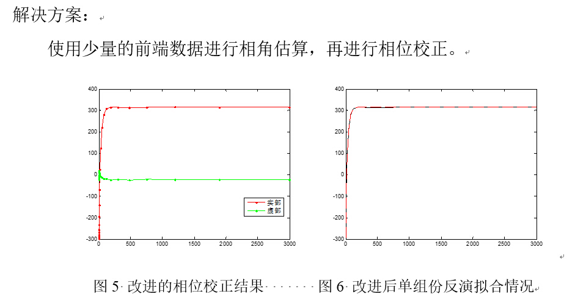

2015-05-26
本周课题内容
- 总体进度
- 具体内容
- Phase Cycling
- Phase Correction
- Phase Error
- Tips 
- Trials and Errors
(输出CPMG回波峰值)

下阶段工作计划
- SQUARE
- 成果整理
Support or Contact
Find something interesting? Contact me .
(输出CPMG回波峰值)
Find something interesting? Contact me .